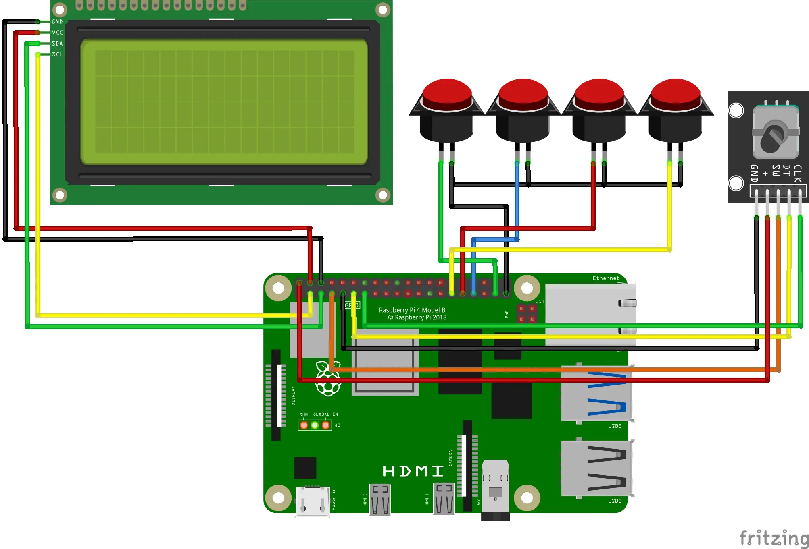
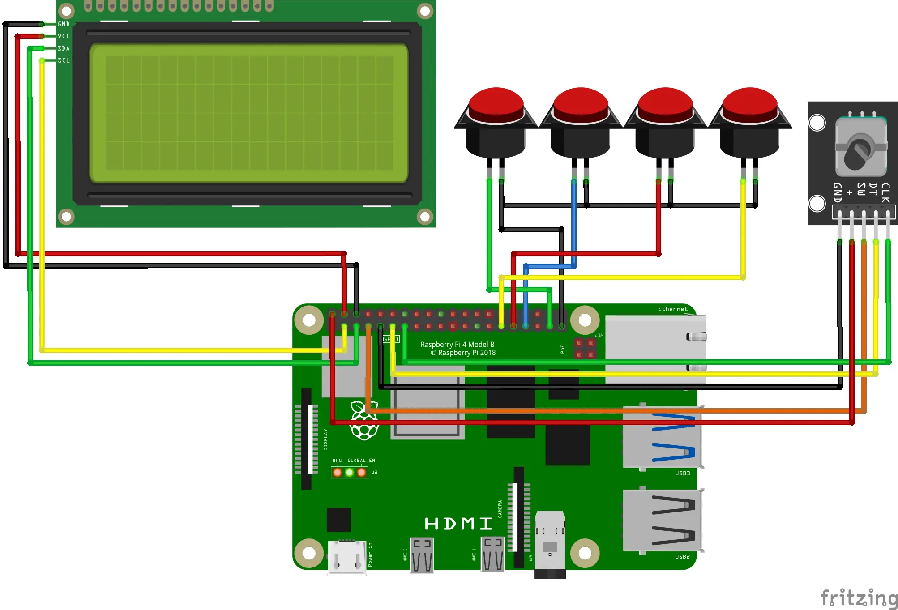

Design Process
Project Overview

Demonstration Video
Materials
This is the list of all the components used in this project with Amazon links (NOT affiliate). These links may be out of date, but I will try to keep them updated. If they are out of date, please email me at benjaminlchase@protonmail.com. Prices are subject to change.
| Component | Cost |
| Raspberry Pi 4 (4GB recommended) | $55 |
| 20x04 LCD Display with I2C backpack | $15 for 2 |
| Buttons | $9 |
| 14 Wires, Female-Female | $6 for 40 |
| 1 KY-040 Rotary Encoder | $10 for 5 |
| Official Raspberry Pi Power Supply | $8 |
| 4 M2.5 x 20 screws | $9 for 100 |
| 8 M3 x 15 screws | $10 for 100 |
| Total Cost | $122 total,
$59 without Raspberry Pi parts |
Getting Software
Go to the PiVibe GitHub repository and follow the instructions there to set up the software.
Build Instructions
 

Base

- Before mounting the Raspberry Pi inside the base of the case, insert the microSD card with the code into the Raspberry Pi.
- Take 4 M2.5 screws and mount the Raspberry Pi to the base on the inside.
- Connect 5 jumper wires between the rotary encoder and the Raspberry Pi as shown in the pinout above.
- Use 2 M3 screws to mount the rotary encoder to the base.
- Add the knob to the rotary encoder. You may need to cut it slightly for an adequete fit on the rotary encoder shaft.
- Optional, but recommended: use a white permanent marker to "paint" the lables on the bottom cover.
- Screw each of 4 buttons onto the bottom cover. I prefer using a green button for recording a track, blue for recording a song, red for clearing all tracks, and yellow for deleting the last track.
- Option 1 (parallel ground, more organized): Solder all ground (black) wires of the buttons together. To do this, cut the wires in half, twist each, tin each with solder, and solder them all to one point. Solder another jumper wire from this point and connect to ground on the Raspberry Pi. Add shrink wrap as insulation.
- Option 2 (individual ground, easier): Connect each ground (black) wire from each button to a ground (GND) pin on the Raspberry Pi.
- Connect each button trigger jumper wire (colored in the pinout above) to each respective pin shown in the pinout diagram above.
Top Portion

- Connect each of 4 jumper wires to VCC, GND, SDA, and SCL on the I2C LCD display backpack. Then connect each of these wires to the corresponding pin on the Raspberry Pi, as shown on the schematic pinout diagram above.
- Carefully push the bottom cover onto the base as to avoid strain on the wires, but to make it stay in place. No screws are needed.
- Use an M3 screw to attach the latch to the front of the top part of the case. Using a locking M3 nut is recommended here.
- Use an M3 screw to attach the kickstand to the left side of the top part of the case. Using a locking M3 nut is also recommended here.
- Now you can mount the I2C LCD display in the top part of the case. Use 4 M3 screws through first the top cover, and then the display into the top cover itself. Be sure that the display is mounted tightly to the case. Be sure not to leave the screws too loose and far out, but also not too tight as this can strip the plastic or go through the top of the case.
- Onto the satisfying part! Use 2 M3 screws, one on the left and one on the right to secure the top and bottom case parts together with a hinge. Ensure that these are not too tight, as stripping plastic will make the screws fall out.
Conclusion